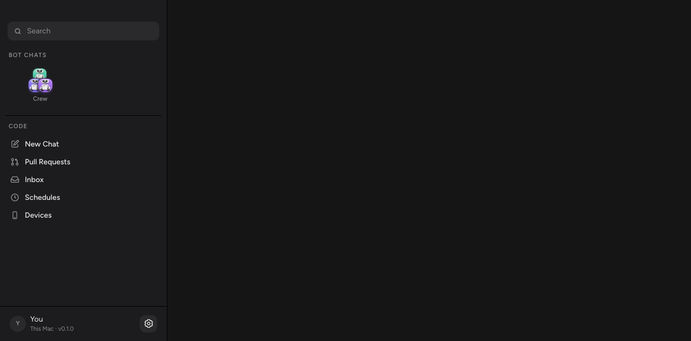

App preferences now live in a compact gear button on the right side of the sidebar's profile footer.
Previously, Settings occupied a labeled navigation row below Devices. Now the same callback is attached to a gear beside You and the host/version label. The existing host availability condition still controls whether Settings appears.
The profile text fills the available space; the gear keeps a fixed 32px target. Hover, keyboard focus, and the current Settings selection all have visible feedback. The button retains the accessible name and tooltip “Settings”.

src/components/Sidebar.tsx: moves the existing Settings action into the footer.src/components/Icon.tsx: adds an outlined gear using the shared decorative SVG wrapper.src/styles/sidebar.css: sizes and aligns the gear and supplies interaction states.Run ./scripts/verify.sh. In the connected app, click the footer gear to open Settings; tab to it and activate it with Enter. Confirm Settings is absent from the navigation list.
Screenshot evidence uses the actual production Sidebar component in Vite with explicit host callbacks. Browser verification confirmed the click callback, active selection, and footer placement.